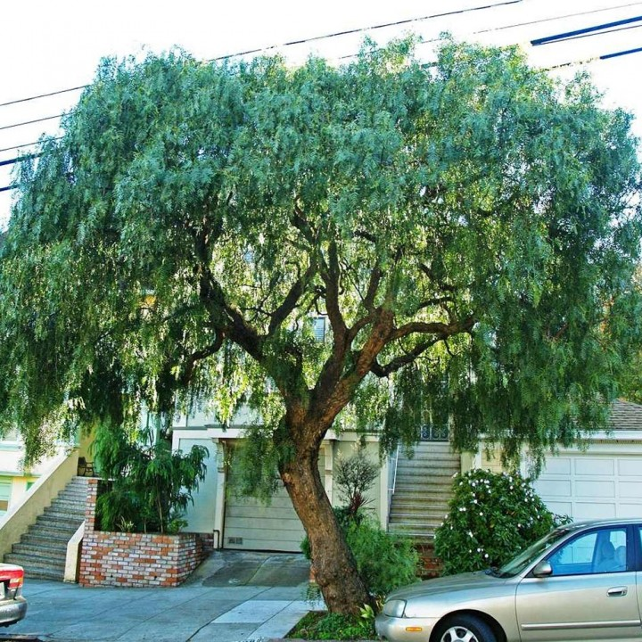
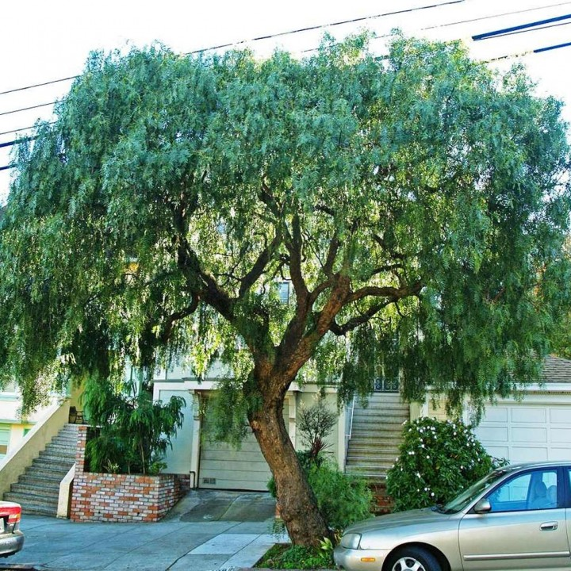

 Home Page
Contatos
Sobre
Home Page
Contatos
Sobre
Aroeira ou arrueira é o nome popular de várias espécies de árvores da família Anacardiaceae.
Dentre elas, destaca-se a aroeira vermelha, muito encontrada em nosso país, utilizada como planta medicinal. É também conhecida como aroeira mansa, que pode ser utilizada como remédio caseiro para tratar doenças sexualmente transmissíveis.